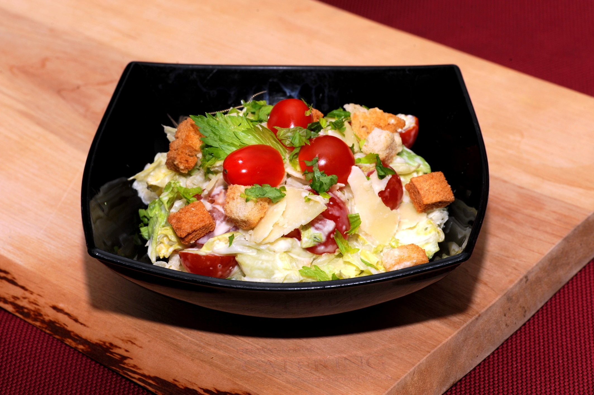

CAESARI SALAT

| koostisosad |
kogused |
| Rooma salat |
1tk |
| Kanafilee |
250g |
| Saiaviil |
3tk |
| Riivjuust |
150g |
| Ploomtomat |
8tk |
| Sool |
1 tl |
| Pipar |
0,5 tl |
| Broilerimaitsea. |
1,5 tl |
| Felix caesari kaste |
1tk |
- Tükelda sai kuubikuteks ja küpseta ahjus.
- Tükelda kanafilee ja pruunist pannil. Maitsesta broilerimaitseaine-soola-pipraga.
- Tükelda salat, pane anumasse. Lisa jahtunud kanatükid ja riivjuust ning sega kastmega kergelt läbi.
- Puista peale krõbedad saiakuubikud ja pooleks lõigatud tomatid.